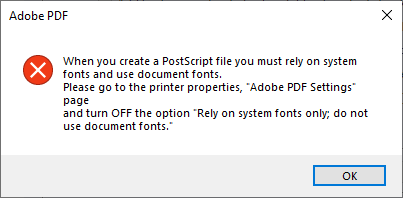

Adobe PDF Error To Turn Off Rely On System Fonts
When publishing to PDF using the Adobe PDF printer, you receive an Adobe PDF error to turn off Rely on system fonts.

Solution
Method 1: To Change the Printer in SpecsIntact
Resolve this issue by changing the default printer in SpecsIntact to use the SpecsIntact PDF. The SpecsIntact integrated printer is designed to eliminate this problem.
- Open the SpecsIntact Explorer, select the File menu and select Printer Setup
- In the Name field, click the drop-down arrow, then select the SpecsIntact PDF printer
- Click OK
 If the SpecsIntact PDF printer is unavailable, you will need to install it. To install the SpecsIntact PDF printer, refer to the Install SpecsIntact PDF Printer topic.
If the SpecsIntact PDF printer is unavailable, you will need to install it. To install the SpecsIntact PDF printer, refer to the Install SpecsIntact PDF Printer topic.
Method 2: To Modify Adobe Acrobat Settings
Change Print Settings in Windows 11:
Before using the Adobe PDF printer, you need to disable the Rely on system fonts only; do not use document fonts in Adobe's Printing Preferences. If you uncheck it from within the SpecsIntact File menu > Process and Print/Publish by clicking the Setup button, it is temporary and will revert when you close the application. To make this change permanent, proceed with the steps below:
- Close SpecsIntact
- In Windows, right-click on the Windows Start button, and select Settings, then perform one of the following:
- Select Bluetooth & devices, select Printers & scanners, select Adobe PDF, then select Printing preferences
- Below Recommended settings, select Printers & scanners, select Adobe PDF, then select Printing preferences
- On the Adobe PDF Printing Preferences window, uncheck Rely on system fonts only; do not use document fonts
- Click Apply and click OK
- Open SpecsIntact
Change Print Settings In Adobe Acrobat:
- Close SpecsIntact
- Open a PDF document, select the File menu and select Print
- With the Adobe PDF printer selected, click the Properties button
- On the Adobe PDF Document Properties window, uncheck Rely on system fonts only; do not use document fonts
- Click OK
- In the Print window, click Cancel or Print
- Open SpecsIntact